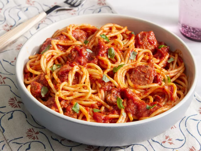

Tomato Pasta

Description:
Tomato Pasta dishes are indulgent and comforting, characterized by their rich, velvety sauces. Typically, the pasta is cooked al dente and then coated in a creamy sauce made from ingredients like heavy cream, butter, and Parmesan cheese.
Ingredients:
- 1 pound sweet Italian sausage, sliced
- ¾ pound lean ground beef
- ½ cup minced onion
- 2 cloves garlic, crushed
- 1 (28 ounce) can crushed tomatoes
- 2 (6.5 ounce) cans tomato sauce
- 2 (6 ounce) cans tomato paste
- ½ cup water
- 2 tablespoons white sugar
- 1 ½ teaspoons dried basil
- 1 teaspoon Italian seasoning
- ½ teaspoon fennel seed
- ½ teaspoon salt
- ¼ teaspoon ground black pepper
Steps:
- Gather all ingredients.
- Cook sausage, beef, onion, and garlic in a large pot or Dutch oven over medium heat until browned; drain fat.
- Stir in crushed tomatoes, tomato sauce, tomato paste, and water.
- Mix in sugar, basil, Italian seasoning, fennel seed, salt, and pepper.
- Cover and simmer, stirring occasionally, until cooked through, about 1 ½ hours.
- Serve with your favorite pasta and enjoy!